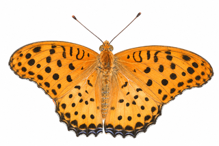
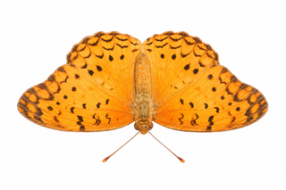
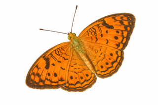

Argyreus hyperbius
Argyreus hyperbius
স্ত্রীর ডগায় কালো অংশ ও সাদা ফিতা। পুরুষ কমলা-কালো; পেছনের ডানার কালো কিনারাও দেখুন।
কমলা ডানায় কালো ছোপ দেখে তিন প্রজাতিকে এক মনে হতে পারে। প্রথমে স্ত্রী-পুরুষের পার্থক্য, তারপর কালো নকশা ও ডানার কিনারা, সবশেষে মাপ ও দেখা পাওয়ার রেকর্ড মিলিয়ে দেখুন।
তথ্য যাচাই: 2026-11-14

Argyreus hyperbius
স্ত্রীর ডগায় কালো অংশ ও সাদা ফিতা। পুরুষ কমলা-কালো; পেছনের ডানার কালো কিনারাও দেখুন।

Phalanta phalantha
ছোট কালো ছোপ ও ঢেউখেলানো রেখা। নিচের পৃষ্ঠ হালকা কমলা; পাশের আলোয় বেগুনি আভা দেখা যায়।

Phalanta alcippe
P. phalantha-র মতো, তবে ওপরের কালো নকশা বেশি বিস্তৃত হতে পারে। ছোট আকার একা যথেষ্ট নয়।
রেফারেন্স চিত্র: সরবরাহকৃত AI-নির্মিত ছবি। মাপ ও নকশার নির্ভুল শনাক্তকরণ-চিত্র নয়; শুধু ছবি দেখে প্রজাতি বা লিঙ্গ নির্ধারণ করবেন না।
| বৈশিষ্ট্য | Argyreus hyperbius | Phalanta phalantha | Phalanta alcippe |
|---|---|---|---|
| ডানার ওপরের পৃষ্ঠ | স্ত্রীর সামনের ডগায় চওড়া কালো অংশ ও সাদা ফিতা; পুরুষে এই ফিতা নেই | কমলাটে-বাদামি পটে ছোট কালো ছোপ ও ঢেউখেলানো রেখা | P. phalantha-র তুলনায় কালো নকশা বেশি বিস্তৃত হওয়ার প্রবণতা |
| স্ত্রী-পুরুষ | স্পষ্ট পার্থক্য | দেখতে অনেকটা একই | স্ত্রীর কালো নকশা বেশি বিস্তৃত হতে পারে; একাধিক লক্ষণ মিলিয়ে দেখুন |
| মাপের উদাহরণ | সামনের এক ডানার দৈর্ঘ্য 27–38 মিমি | ডানা মেলা অবস্থায় বিস্তার 50–60 মিমি; ভারতের সূত্র | ডানা মেলা অবস্থায় বিস্তার 35–45 মিমি; শ্রীলঙ্কার সূত্র |
| শুঁয়োপোকার খাদ্যগাছ | ভায়োলেট ও প্যানসি-সহ Viola | উইলো ও Flacourtia-সহ বিভিন্ন গাছ | বিদেশি সূত্রে Violaceae গোত্রের গাছ; ওকিনাওয়ার খাদ্যগাছ নিশ্চিত নয় |
| ওকিনাওয়ায় অবস্থান | বহু দ্বীপে রেকর্ড; বাগান ও তৃণভূমিতে পর্যবেক্ষণযোগ্য | বাইরে থেকে আগমন ও সাময়িক প্রজননের রেকর্ড অন্তর্ভুক্ত | ইয়োনাগুনিতে পথভ্রষ্ট আগন্তুকের রেকর্ড; নিয়মিত বাসিন্দা হিসেবে ধরবেন না |
একটি সামনের ডানার দৈর্ঘ্য ও দুই ডানা মেলা অবস্থায় বিস্তার আলাদা মাপ; সরাসরি তুলনা করা যায় না। বিদেশি মাপগুলো ওকিনাওয়ার নমুনার পরিসর নয়। অঞ্চল, উপপ্রজাতি ও ব্যক্তি অনুযায়ী পার্থক্য থাকে। [1–6]
তিনটিই Nymphalidae গোত্রের। প্রথমটি Argyreus গণের, অন্য দুটি Phalanta গণের। সরবরাহকৃত ডেটার সঙ্গে মিলিয়ে এখানে Argyreus hyperbius নামটি ব্যবহার করা হয়েছে; অন্য শ্রেণিবিন্যাসে Argynnis hyperbius নামও দেখা যায়।
A. hyperbius-এর শুঁয়োপোকা প্যানসি-সহ ভায়োলেটজাতীয় গাছ খায়। P. phalantha-র খাদ্যগাছের মধ্যে উইলো ও Flacourtia রয়েছে। P. alcippe-র বিদেশি খাদ্যগাছের তথ্য ওকিনাওয়ায় প্রজননের প্রমাণ নয়। [1, 4, 5]
জাপানি প্রজাপতির ব্যবহৃত সূত্রে P. alcippe-র 31 জুলাই 1993, ইয়োনাগুনি দ্বীপের একটি রেকর্ড আছে। এমন আগমন মানেই সেখানে স্থায়ী প্রজননকারী জনসংখ্যা আছে, তা নয়। এই নিবন্ধ সব রেকর্ডের হালনাগাদ পূর্ণ তালিকা নয়। [3]
না। মাপ সহায়ক সূত্র মাত্র। অঞ্চল, ব্যক্তি ও ছবির স্কেল ভিন্ন হতে পারে। ছোপের বিন্যাস ও বিস্তার, ডানার গঠন এবং অন্য লক্ষণও মিলিয়ে দেখুন।
A. hyperbius বাগানে দেখা যেতে পারে। প্যানসি বা ভায়োলেট গাছ থাকলে শুঁয়োপোকাও খুঁজে দেখতে পারেন। নিজে একটি তুলনা-কার্ড বা নোটবই বানান: তারিখ, স্থান এবং ডানার দুই পৃষ্ঠের ছবি রাখলে পরের পর্যবেক্ষণ তুলনা করা সহজ হবে।
শেয়ার করার জন্য সংক্ষিপ্ত পরিচয়
স্থানীয় রেকর্ড ও মূল তথ্য: সরবরাহকৃত Z002 butterflies.sqlite3 / butterflies.csv (2026-11-10)। উপরের সূত্র দিয়ে আকার ও নকশা যাচাই করা হয়েছে।